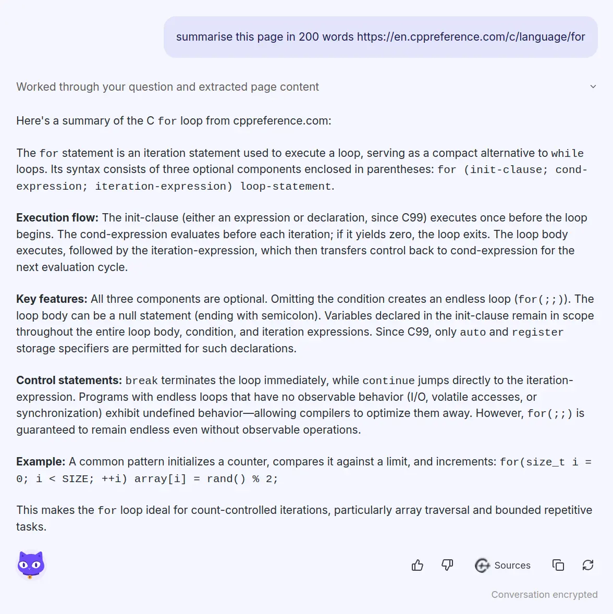
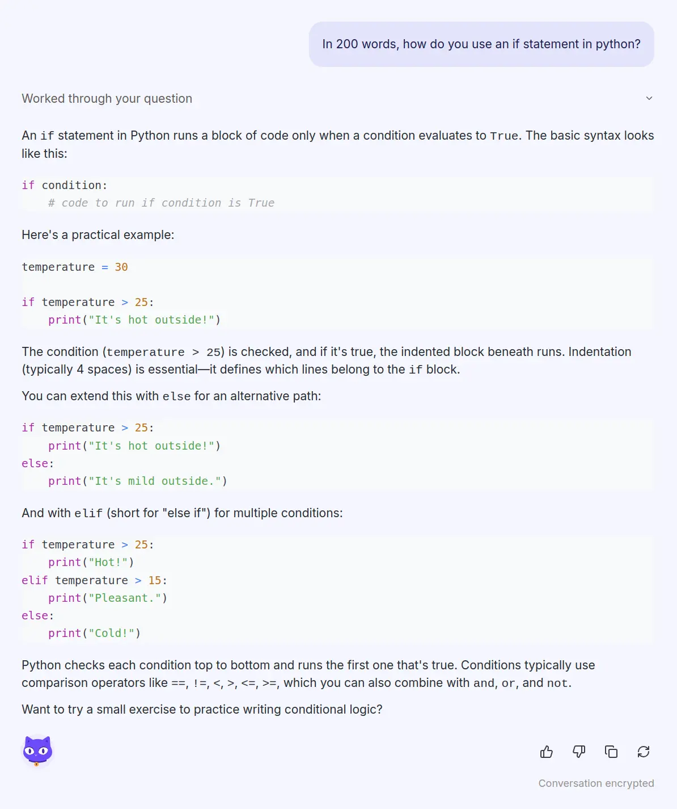
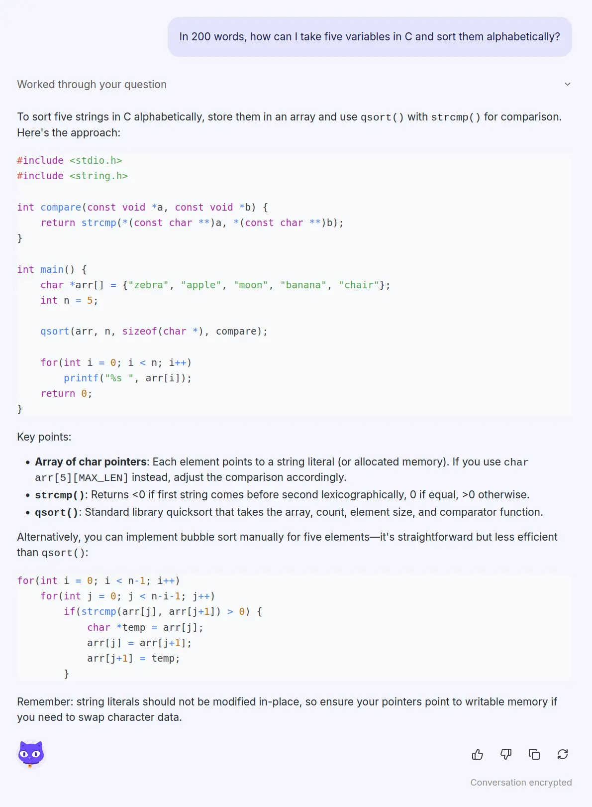
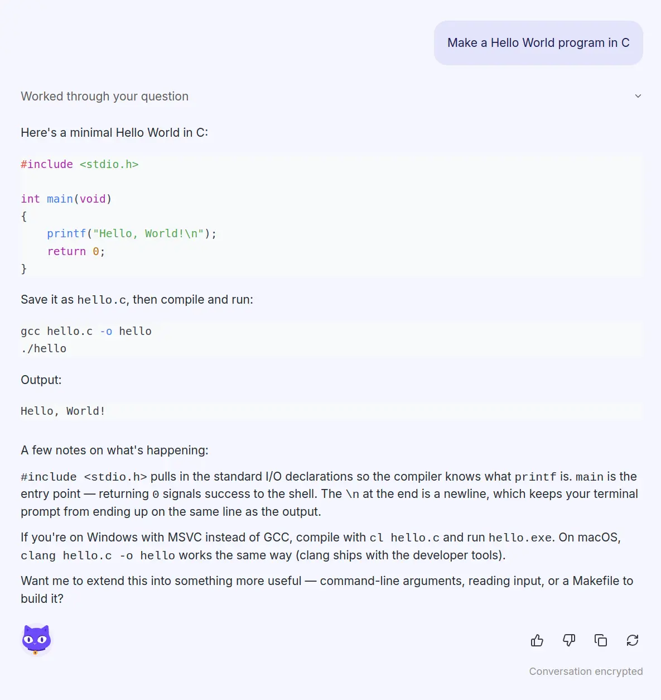
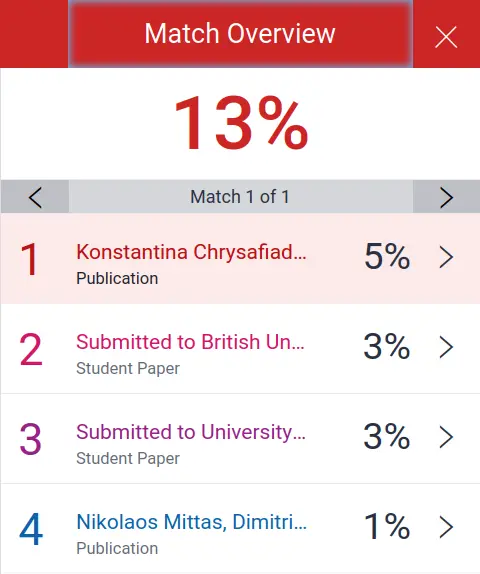
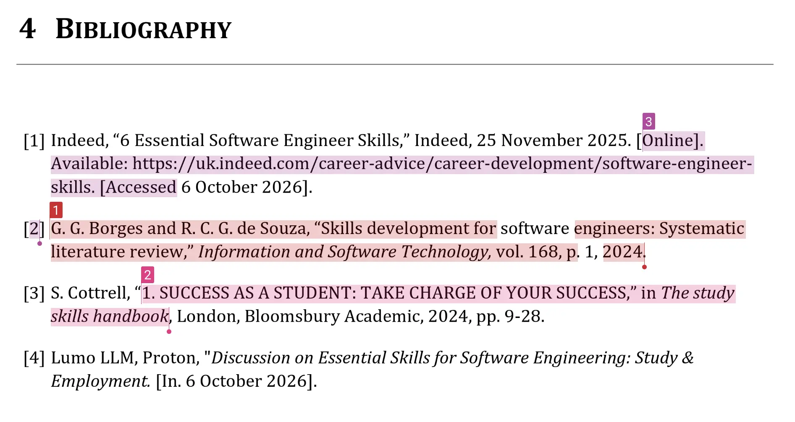
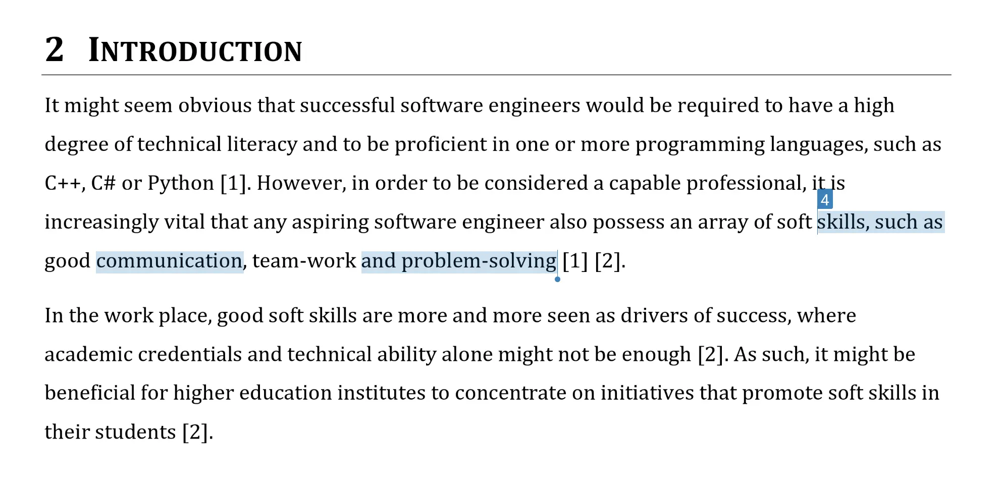

Task 1A.
Essential Skills for Study & Employment in Software Engineering
1. Introduction
It might seem obvious that successful software engineers would be required to have a high degree of technical literacy and to be proficient in one or more programming languages, such as C++, C# or Python [1]. However, in order to be considered a capable professional, it is increasingly vital that any aspiring software engineer also possess an array of soft skills, such as good communication, team-work and problem-solving [1] [2].
In the work place, good soft skills are more and more seen as drivers of success, where academic credentials and technical ability alone might not be enough [2]. As such, it might be beneficial for higher education institutes to concentrate on initiatives that promote soft skills in their students [2].
2. Soft Skills in Higher Education & the Workforce
2.1 Self-Sufficiency
There are many ways in which higher education institutions can promote soft skills in their students. At a higher education level, students are required to be self-sufficient, working to improve their own abilities and habits and setting their own goals, using the information and resources available to them [3]. Similarly, in the workplace, engineers are expected to take the initiative in pursuing their own self-study to stay up to date with industry trends and attain new certifications [4].
2.2 Communication & Collaboration
Students need to be adaptable, developing their ability to learn both independently and collaboratively with other students, and are expected to communicate productively with their team mates and tutors [3]. In the workplace, engineers are expected to work efficiently in teams, give and receive constructive feedback and effectively resolve conflicts when they occur [4].
2.3 Critical Thinking & Problem Solving
Students are required to refine their critical thinking and problem-solving abilities to evaluate different information sources, develop evidence-based reasoning and find solutions for diverse and complex problems [3]. Engineers are similarly expected to be able to breakdown complex problems and use their own research and critical thinking to develop creative solutions for them [4].
3. References
[1] Indeed, "6 Essential Software Engineer Skills," Indeed, 25 November 2025. [Online]. Available: https://uk.indeed.com/career-advice/career-development/software-engineer-skills. [Accessed 6 October 2026].
[2] G. G. Borges and R. C. G. de Souza, "Skills development for software engineers: Systematic literature review," Information and Software Technology, vol. 168, p. 1, 2024.
[3] S. Cottrell, "1. SUCCESS AS A STUDENT: TAKE CHARGE OF YOUR SUCCESS," in The study skills handbook, London, Bloomsbury Academic, 2024, pp. 9-28.
[4] Proton Lumo 2.0, LLM Essential Skills for Software Engineering: Study & Employment. [Generated]. 6 October 2026.
4. Appendix A
Output Generated by Lumo LLM


Task 1B.
Analysis of Popular AI Assistants
1. Comparison of AI assistants & Their Use Cases
1.1 Claude Fable 5
Claude Fable 5 is the latest large language model (LLM) from Anthropic, released in September 2026 [1]. It has improved accuracy, cost structure, privacy and safeguarding but restricted access to advanced capabilities might make it a poor fit for some organizations [1].
1.2 GPT 5.6
GPT 5.6 is the latest LLM from OpenAI, released in June 2026 [2]. It is suitable for most business and developer workloads but is weaker in long-form writing and careful reasoning when compared with competitors like Claude [2].
1.3 Lumo 2.0
Lumo 2.0 is the latest LLM from Proton, released in June 2026 [3]. Its use of zero-access encryption means Proton has no access to user logs but it is unable to match competing tools in the most difficult coding and reasoning tasks [3].
2 Lumo 2.0 as an AI Assistant for a Software Engineer
2.1 Summarising Documentation
By providing a URL, an engineer could prompt Lumo to summarise a piece of industry documentation which, in some scenarios, might make it possible to more quickly understand it.

Figure 1 ~ Prompting Lumo LLM to Summarise Documentation
2.2 Describing How to use a Function
An engineer could prompt Lumo to describe the use of a function in a programming language, using its training data as a source, which, in some scenarios, might be more efficient than reading industry documentation.

Figure 2 ~ Prompting Lumo LLM to Describe the Use of a Function
2.3 Describing a Solution to a Problem
An engineer could prompt Lumo to describe a potential solution to a problem, using its training data as a source, which, in some scenarios, might be more efficient than relying on their own programming ability.

Figure 3 ~ Prompting Lumo LLM to Describe a Solution to a Problem
2.4 Generating a Snippet of Code
An engineer could prompt Lumo to generate a snippet of code, using its training data as a source, which, in some scenarios, might be more efficient than writing the code themselves.

Figure 4 ~ Prompting Lumo LLM to Generate a Snippet of Code
3. References
[1] J. West, "Claude Fable 5.1 Review: Evidence-Based Capability Assessment," Layer3Labs, 9 September 2026. [Online]. Available: https://www.layer3labs.io/guides/claude-fable-5-1-review. [Accessed 11 October 2026].
[2] J. West, "GPT-5.6 Review: An Honest Verdict on Sol, Terra, and Luna," Layer3Labs, 9 September 2026. [Online]. Available: https://www.layer3labs.io/guides/gpt-5-6-review. [Accessed 11 October 2026].
[3] L. Vojtechova, "Lumo AI Review: Is Proton's Privacy-First AI Any Good?," Fello AI, 24 July 2026. [Online]. Available: https://felloai.com/lumo-ai-review. [Accessed 11 October 2026].
Task 1C.
Turnitin Similarity Score & Reflection
1. Turnitin Similarity Score
On submission to Turnitin, the paper received a similarity score of 13%, with 6% being attributed to two publications, another 6% attributed to two student papers and the final 1% unattributed.

Figure 1 ~ Turnitin Similarity Scores
Three of the attributions were highlighted in the bibliography, perhaps indicating that other students and authors have credited these sources in their work.

Figure 2 ~ Turnitin Shows Three Highlighted Attributions in the References
The final attribution was found in the introduction to the paper, where common words like "communication" and "problem-solving" were highlighted, perhaps indicating they were found in a similar arrangement in the associated publication.

Figure 3 ~ Turnitin Has Highlighted Some Words in the Introduction That Were Found in Another Publication
2. Self-Assessment
The student was asked to assess their worked, based on the Generic Assessment Criteria provided.
For the category of engagement with literature, the student felt they scored 60-69%, indicating "engagement with a wide range of literature" [1] and "generally sound referencing" [1].
For the category of knowledge and understanding, the student felt they scored 60-69%, indicating "competent knowledge of the basic underlying concepts" [1] and "very good understanding" [1].
For the category of cognitive and intellectual skills, the student felt they scored 60-69%, indicating "sound evaluation of the underlying concepts" [1] and "ability to devise arguments using evidence" [1].
For the category of practical skills, the student felt they scored 70-84%, indicating "advanced application of a range of taught, basic methods, materials, tools and/or techniques" [1] and "evidence of different approaches to problem-solving in particular contexts and proposes appropriate solutions" [1].
For the category of transferable skills for life and professional practice, the student felt they scored 70-84%, indicating their work is "coherent, very fluent and is presented professionally" [1] and "demonstrates excellent skills for employment" [1].
3. References
[1] University of Wales: Trinity Saint David, Level 4 Assessment Specification, 2026.